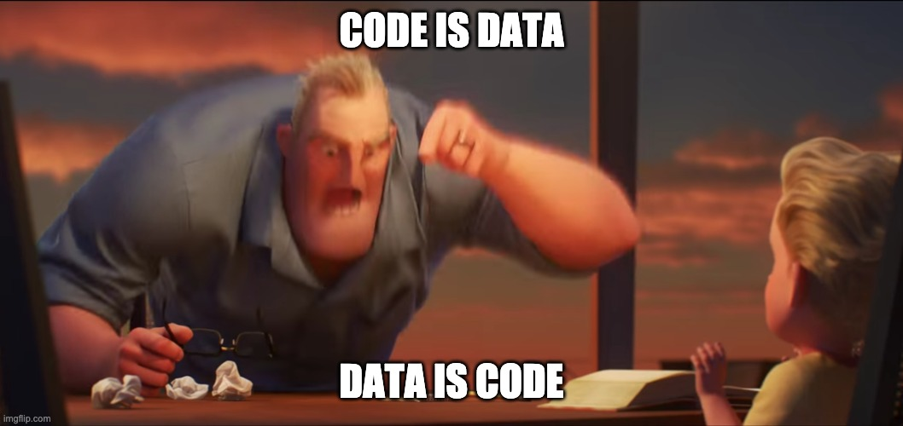

(ns language.grammar.morphology)
because we humans just love ourselves some rules
or: what makes up a word?
usually the datatypes you will find laying around
will be the ones contemplated by edn:
(usually called a form)
booleans and nil
'(true false nil)
numbers!
'(1 2 3/4 5.75 7865874567M)
strings, only double quoted ones
'("you" "already" "know \\"them\\"")
keywords
'(:like-strings! :but'internalized :person/name)
ok, those are familiar, but being a lisp and very meta, clojure needs: symbols!
'(a b #'map reduce clojure.core/future)
sometimes we need to combine them to make a meaningful piece
our shopping list, for when we want to look up by the first thing, use it and keep the rest for later
(def my-shopping-list (list :carrots :beets :lettuce))
got to the store, find the last week grocery list! let's exhaust it before going on for the new one
(concat '(:bananas :apples) my-shopping-list)
yay just bought the first thing, how do i cross it off if i cant mutate change the list???
(def already-bought-carrots (pop my-shopping-list))
a mapping from english words to german ones
when given a value we want to find the matching one
(def en->de {"dog" "Hun" "house" "Haus"})
how to translate? (yes it is just like a function!)
(en->de "house")
learned a new word?
(assoc en->de "beer" "Bier")
oh no its not Hun, its Hund, how to fix it?
(update en->de "dog" str "d")
had so much beer that forgot about house?
(dissoc en->de "house")
building and learning and growing together
(defn learn-from-friend [friends-knawledge] (merge en->de friends-knawledge))
a vector of the amount of cars we sold by day of the month
for when we want to access an arbitrary day, but we may also want to iterate over them, to get the sum over the month for example
(def jan-sales [2 3 5 8 5 3 7 0 4 2 2 3 6 4 9 2 3 5 8 5 3 7 0 4 2 2 3 6 4 9])
our average of cars sold by day would be:
(/ (reduce + jan-sales) (count jan-sales))
and on a given day? (yay consistency)
(jan-sales 12)
what about just on the last day?
(peek jan-sales)
the set suits in a deck, in portuguese
we dont really care about duplicates, so it doesnt matter if we have 13 of each one, we just care if they are there or not
(def naipes #{:copas :espadas :ouros :paus})
is :cat a valid suit?
(naipes :cat) ; no 😿
these are the ways to convey information in clojure, and as you can see, all of them can behave as functions as well, but not only that:

yes! if you payed attention, you may have noticed the code examples also match that same syntax! that's because, well, in clojure your code is just a data structuce, a list to be precise
speaking of which, lets hop over to syntax